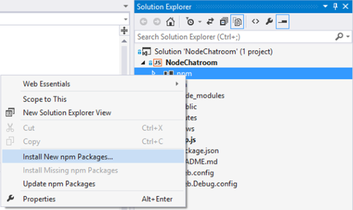
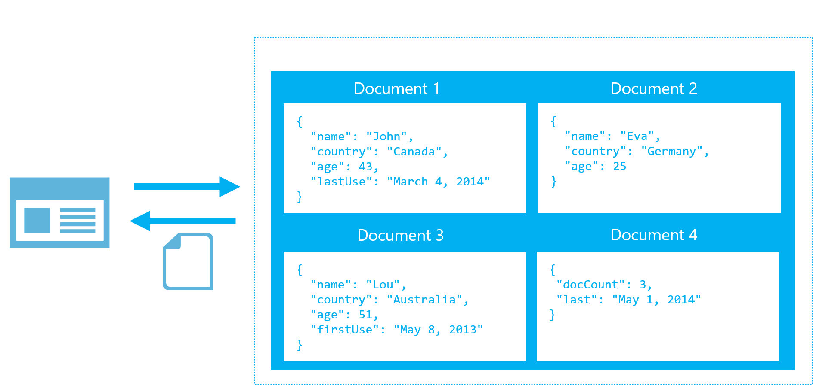

Building the Backend
Agenda
- What are Web Sockets?
- Using Socket.IO to connect users, broadcast and receive messages
- Using a NoSQL Database
What are Web Sockets?
What are Web Sockets??
- A Websocket is a protocol designed to allow web applications to create a full-duplex channel over TCP (i.e. to have bi-directional communication) between the web browser and a web server
- It is fully compatible with HTTP and uses TCP port number 80
- WebSockets allowed web applications to become real-time and support advanced interactions between the client and the server
- It is supposed by several browsers including Microsoft Edge, Internet Explorer, Google Chrome, Firefox, Safari and Opera
What is Socket.IO?
- Socket.IO is a simple JavaScript library and node.js module that allows you to create real-time bidirectional event-based communication apps simply and quickly
- It simplifies the process of using WebSockets significantly. We will be using Socket.IO v1.0 to make our chatroom app
Using Socket.IO to connect users, broadcast and receive messages
Implementing Socket.IO
- Add it to the package.json
- In Visual Studio > right click NPM to add module 
- Or from the command prompt
npm install --save socket.io
Demo
Using Socket I.O to connect users, send and receive messages
Using a NoSQL Database
About NoSQL databases
- Not only SQL
- Different types: document based, graph databases, key-value stores, etc.
- DocumentDB, MongoDB, Couchbase, HBase, Cassandra
- Object oriented APIs
- Good for large amounts of data, can be scaled
DocumentDB
- Particularly suited for web and mobile applications
- Schema-less, NoSQL document database
- Fully managed, with provisioned capacity
- Stored entities are JSON documents
- Tunable consistency
- Designed to scale

DocumentDB
- NoSQL document database-as-a-service
- First of its kind database service to offer native support for JavaScript, SQL query and transactions over JSON documents
| Rich Query and Transactions over JSON Data | Reliable & Predictable Performance | Rapid Development |
|---|---|---|
| Query JSON data with no secondary indices | Fast, predictable performance | Build with familiar tools – REST, JSON, JavaScript |
| Native JavaScript transactional processing | Tunable consistency | Easy to start and fully-managed |
| Familiar SQL-based query language | Elastic scale | Enterprise-grade Azure platform |
DocumentDB: A Document Store
DocumentDB: The Basics

Demo
Saving messages to Azure DocumentDB
Demo
Setting environment variables
Using MongoDB
- Need to create a mongodb
- 3rd party sources like MongoHQ or MongoLab
- Use the MongoLab add on in Azure
- Can customize and manually use via VM
- Need the mongodb URI for connection
Add Support for MongoDB
- Add it to the package.json
- In Visual Studio > right click NPM to add module
- Or from the command prompt
npm install --save mongodb
Microsoft
© 2016 Microsoft Corporation. All rights reserved. Microsoft, Windows, Windows Vista and other product names are or may be registered trademarks and/or trademarks in the U.S. and/or other countries. The information herein is for informational purposes only and represents the current view of Microsoft Corporation as of the date of this presentation. Because Microsoft must respond to changing market conditions, it should not be interpreted to be a commitment on the part of Microsoft, and Microsoft cannot guarantee the accuracy of any information provided after the date of this presentation. MICROSOFT MAKES NO WARRANTIES, EXPRESS, IMPLIED OR STATUTORY, AS TO THE INFORMATION IN THIS PRESENTATION.